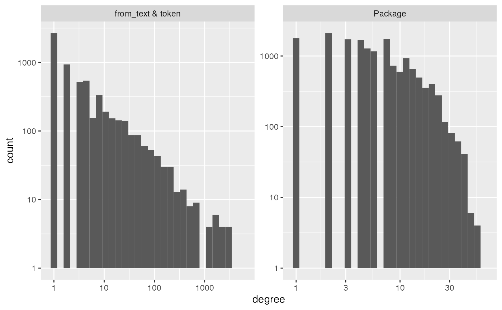
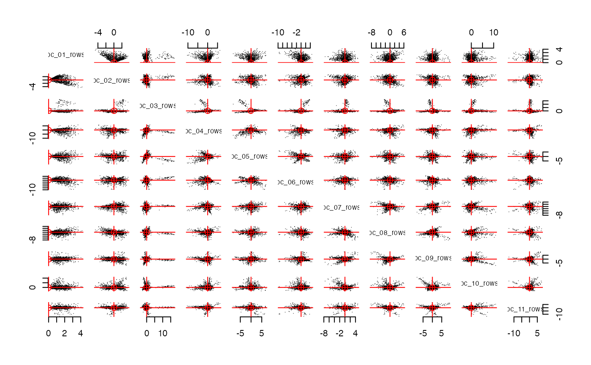
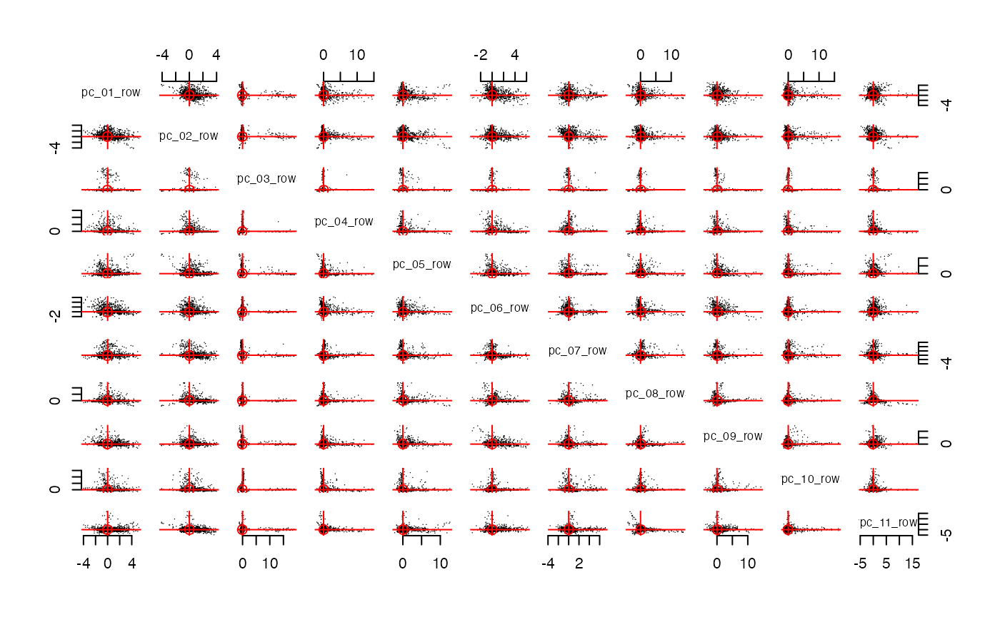
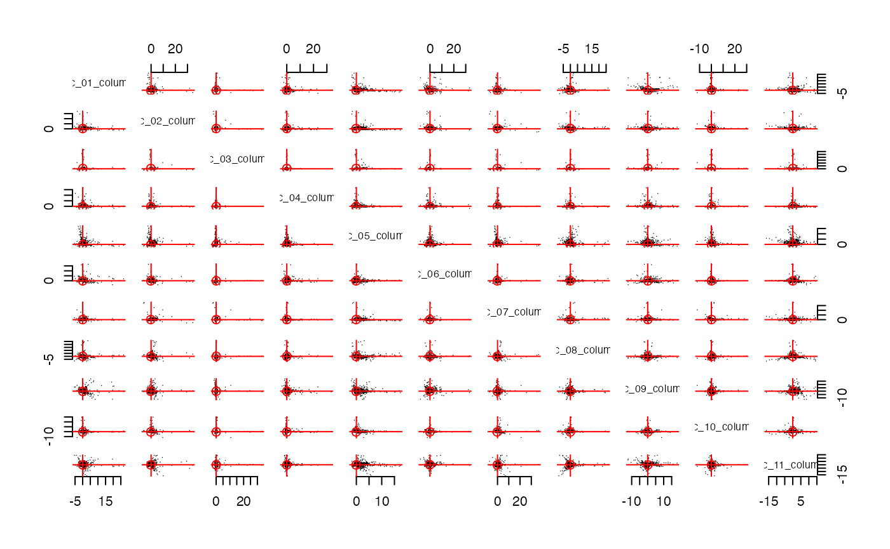

library(tidyverse)
#> ── Attaching core tidyverse packages ──────────────────────── tidyverse 2.0.0 ──
#> ✔ dplyr 1.1.4 ✔ readr 2.1.5
#> ✔ forcats 1.0.0 ✔ stringr 1.5.1
#> ✔ ggplot2 3.5.0 ✔ tibble 3.2.1
#> ✔ lubridate 1.9.3 ✔ tidyr 1.3.1
#> ✔ purrr 1.0.2
#> ── Conflicts ────────────────────────────────────────── tidyverse_conflicts() ──
#> ✖ dplyr::filter() masks stats::filter()
#> ✖ dplyr::lag() masks stats::lag()
#> ℹ Use the conflicted package (<http://conflicted.r-lib.org/>) to force all conflicts to become errors
library(longpca)
# This data on CRAN packages is pre-loaded in longpca. It was downloaded in February 2024.
all_packages
#> # A tibble: 20,319 × 17
#> Package Version Priority Depends Imports LinkingTo Suggests Enhances License
#> <chr> <chr> <chr> <chr> <chr> <chr> <chr> <chr> <chr>
#> 1 A3 1.0.0 NA R (>= … NA NA randomF… NA GPL (>…
#> 2 AalenJo… 1.0 NA NA NA NA knitr, … NA GPL (>…
#> 3 AATtools 0.0.2 NA R (>= … magrit… NA NA NA GPL-3
#> 4 ABACUS 1.0.0 NA R (>= … ggplot… NA rmarkdo… NA GPL-3
#> 5 abasequ… 0.1.0 NA NA NA NA NA NA GPL-3
#> 6 abbrevi… 0.1 NA NA NA NA testtha… NA GPL-3
#> 7 abc 2.2.1 NA R (>= … NA NA NA NA GPL (>…
#> 8 abc.data 1.0 NA R (>= … NA NA NA NA GPL (>…
#> 9 ABC.RAP 0.9.0 NA R (>= … graphi… NA knitr, … NA GPL-3
#> 10 ABCanal… 1.2.1 NA R (>= … plotrix NA NA NA GPL-3
#> # ℹ 20,309 more rows
#> # ℹ 8 more variables: License_is_FOSS <chr>, License_restricts_use <chr>,
#> # OS_type <chr>, Archs <chr>, MD5sum <chr>, NeedsCompilation <chr>,
#> # File <chr>, Repository <chr>
# You can download the most recent version in this fashion:
# all_packages = available.packages() |> as_tibble()
# if you download fresh data, the specific interpretations below are likely to not be sensible.
all_packages |> select(Package, Imports)
#> # A tibble: 20,319 × 2
#> Package Imports
#> <chr> <chr>
#> 1 A3 NA
#> 2 AalenJohansen NA
#> 3 AATtools magrittr, dplyr, doParallel, foreach
#> 4 ABACUS ggplot2 (>= 3.1.0), shiny (>= 1.3.1),
#> 5 abasequence NA
#> 6 abbreviate NA
#> 7 abc NA
#> 8 abc.data NA
#> 9 ABC.RAP graphics, stats, utils
#> 10 ABCanalysis plotrix
#> # ℹ 20,309 more rowsIn particular, all_packages contains the
“Imports-dependency-graph” (idg) as a comma separated string. The key
function make_interaction_model has an argument
parse_text that is built for studying document-term
interactions and can easily extract this information:
# in make_interaction_model, the ... arguments go to tidytext::unnest_tokens for the text parsing. In this case, we do not want to make the words lower case (because package names are case sensitive and that might be important later)
idg = make_interaction_model(all_packages,
~Package*Imports,
parse_text = TRUE,
to_lower = FALSE)
idg
#> $row_universe
#> # A tibble: 20,319 × 3
#> Package n row_num
#> <chr> <int> <int>
#> 1 Seurat 64 1
#> 2 tidyverse 60 2
#> 3 radiant.data 58 3
#> 4 radiant.model 58 4
#> 5 SSDM 55 5
#> 6 BasketballAnalyzeR 53 6
#> 7 tRigon 49 7
#> 8 AFM 48 8
#> 9 dextergui 48 9
#> 10 proteus 48 10
#> # ℹ 20,309 more rows
#>
#> $column_universe
#> # A tibble: 6,230 × 4
#> from_text token n col_num
#> <chr> <chr> <int> <int>
#> 1 Imports stats 5442 1
#> 2 Imports utils 3423 2
#> 3 Imports dplyr 3299 3
#> 4 Imports methods 3210 4
#> 5 Imports ggplot2 3135 5
#> 6 Imports Rcpp 2548 6
#> 7 Imports rlang 2172 7
#> 8 Imports graphics 2158 8
#> 9 Imports magrittr 1954 9
#> 10 Imports stringr 1698 10
#> # ℹ 6,220 more rowsThe $column_universe illustrate how
make_interaction_model has parsed the variable
Imports. There are 20319 “rows” and 6230 “columns”. The
diagnose and pick_dim functions help us
understand how pca might perform:
diagnose(idg)
#> Warning in scale_y_log10(): log-10 transformation introduced
#> infinite values.
#> Warning: Removed 11 rows containing missing values or values outside the scale range
#> (`geom_bar()`).
#> # A tibble: 6 × 3
#> measurement Package `from_text & token`
#> <chr> <dbl> <dbl>
#> 1 number_of_items 20319 6230
#> 2 average_degree 6 18
#> 3 median_degree 4 2
#> 4 percent_le_1 29 43
#> 5 percent_le_2 39 58
#> 6 percent_le_3 48 66Recall that “degree” is the number of interactions a row or column
has. Above, diagnose shows that this graph is very sparse;
the median degrees are in the low single digits. However, we still
expect to be able to detect some signal because in the plots we see that
there are lots of Packages with degree over 10 (i.e. more than
dependencies). The other histogram illustrates the power law degree (the
top of the bins roughly follow a straight line down on the log-log
scale). So, there are lots of packages being imported by over 100 other
packages, and a handful of packages being imported by over 1000.
How many dimensions/PCs should we compute? This number is often denoted by k. I have multiple competing thoughts/heuristics that might be useful for you. I think…
- there is very rarely a “true value” of k and so, typically, discussions that presume a true value fruitless.
- the true value of k could be considered as n (the number of rows or
columns) and also, past a certain point, the dimensions cannot be
recovered because they are overcome by noise. So, there might be a
reasonable discussion of “the largest reasonable choice of k”.
- you do not need to set k to be the largest reasonable choice of k.
Some contexts might warrent this, but without more context, there is
nothing bad about picking a smaller k that makes your interpretation
tasks easier. Alternatively, maybe you are looking for a specific signal
and it happens to be one of the first few PCs. All of this is very
reasonable.
- folks might try picking a larger dimension that they would typically consider… there are often interesting dimensions past the first “gap” or “elbow”.
Built around the intuition in 2) above, we made “cross-validated
eigenvalues” that you can access with the function
pick_dim. Essentially, for each PC dimension, we test the
null hypothesis that the uncovered PC is uncorrelated with any
underlying signal. This requires “post-selection inference” for which we
utilize cross-validation to get Z-scores and p-values for each
dimension:
set.seed(1)
# eicv = pick_dim(idg, dimMax = 100)
# plot(eicv)
# eicv$estimated_dimensionThe first insignificant p-value is the 64th. So, the code gives
$estimated_dimension to be 63. However, even after 64,
there are some significant p-values. The first negative Z-score happens
at the 90th dimension. So, the decay to insignificance is slow and I am
certain that there is signal after the 63rd dimension.
For ease of illustration, will proceed with k=11
dimensions. The first 10 Z-scores in eicv seem to be a bit
larger than the rest.
pcs = pca(idg, k = 11)
pcs
#> # A tibble: 20,319 × 16
#> Package n row_num degree weighted_degree pc_01_rows pc_02_rows pc_03_rows
#> <chr> <int> <int> <int> <dbl> <dbl> <dbl> <dbl>
#> 1 Seurat 64 1 64 64 3.84 1.51 -1.02
#> 2 tidyve… 60 2 58 60 4.16 -4.21 1.49
#> 3 radian… 58 3 57 58 3.95 -2.46 -1.00
#> 4 radian… 58 4 57 58 3.70 -1.61 0.124
#> 5 SSDM 55 5 55 55 3.10 1.87 0.444
#> 6 Basket… 53 6 51 53 3.19 1.21 -0.571
#> 7 tRigon 49 7 46 49 3.16 -0.238 -1.02
#> 8 AFM 48 8 43 48 3.26 1.60 0.104
#> 9 dexter… 48 9 45 48 3.76 -1.12 -1.05
#> 10 proteus 48 10 44 48 3.47 -0.305 2.68
#> # ℹ 20,309 more rows
#> # ℹ 8 more variables: pc_04_rows <dbl>, pc_05_rows <dbl>, pc_06_rows <dbl>,
#> # pc_07_rows <dbl>, pc_08_rows <dbl>, pc_09_rows <dbl>, pc_10_rows <dbl>,
#> # pc_11_rows <dbl>
#> # A tibble: 6,230 × 17
#> from_text token n col_num degree weighted_degree pc_01_columns
#> <chr> <chr> <int> <int> <int> <dbl> <dbl>
#> 1 Imports stats 5442 1 5442 5442 14.5
#> 2 Imports utils 3423 2 3423 3423 13.4
#> 3 Imports dplyr 3299 3 3299 3299 16.8
#> 4 Imports methods 3210 4 3210 3210 12.1
#> 5 Imports ggplot2 3135 5 3135 3135 14.4
#> 6 Imports Rcpp 2548 6 2548 2548 8.93
#> 7 Imports rlang 2172 7 2172 2172 14.3
#> 8 Imports graphics 2158 8 2158 2158 9.29
#> 9 Imports magrittr 1954 9 1954 1954 13.1
#> 10 Imports stringr 1698 10 1698 1698 12.3
#> # ℹ 6,220 more rows
#> # ℹ 10 more variables: pc_02_columns <dbl>, pc_03_columns <dbl>,
#> # pc_04_columns <dbl>, pc_05_columns <dbl>, pc_06_columns <dbl>,
#> # pc_07_columns <dbl>, pc_08_columns <dbl>, pc_09_columns <dbl>,
#> # pc_10_columns <dbl>, pc_11_columns <dbl>
streaks(pcs,mode = "rows",plot_columns = 1:11)
# streaks(pcs,mode = "columns",plot_columns = 1:11)The function streaks makes a pairs plot of the
pcs. Notice that these panels display “radial
streaks”. If we rotate these PCs with Varimax, then perhaps these
streaks will align with the coordinate axes. The function
rotate will rotate both the rows and the column and return
an object that is the same class as pcs (i.e. the class is
pc).

streaks(spcs, mode = "cols", plot_columns = 1:11)
Indeed, rotate roughly aligns the streaks to the axes.
So we expect each dimension to align with a meaningful concept or
community within CRAN packages. The alignment isn’t perfect; some
streaks are close to an axis, but not perfecty aligned. This is often a
hint that k could/should be a bigger (something we already know from
pick_dim above).
The row_features and column_features are
scaled within each feature so that the average squared value is
1; the standard linear algebra custom is to define these so that their
sum of squared values is 1. The benefit of the average is that
you can imagine each axis above has a marginal SD of 1. So, the
column_features have much much larger “outliers”; we will
see below that these outliers are packages that are imported by hundreds
or thousands of other packages. The maximum number of packages imported
by another package is 64 by Seurat; tidyverse is second with 58 imports.
This type of asymmetry (row vs column) is common and we will delve more
into the meaning of this asymmetry below.
There are two things that we might do at this point. First, we could
try to interpret what the 11 dimensions (on each
row_feature and column_feature) “represents”…
that is, we could try to interpret them. Alternatively, we might simply
use them to start predicting something of interest. For example, we
might see if these community labels are predictive/associated with the
type of License that a package uses.
If the data source is familiar to you, then the simplest way to
interpret each factor is to examine the largest element. The function
top in longpca makes this easy. The first
argument is your pc object; in this case we will use
spcs. The second argument is the dimension that you wish to
inspect. Let’s inspect the first dimension:
top(spcs, this_dim = 1)
#> $top_rows
#> # A tibble: 18 × 2
#> Package vpc_01_rows
#> <chr> <dbl>
#> 1 TOmicsVis 7.86
#> 2 RNAseqQC 6.89
#> 3 MOCHA 6.00
#> 4 CINNA 5.65
#> 5 bulkAnalyseR 5.57
#> 6 ggpicrust2 5.55
#> 7 MitoHEAR 5.43
#> 8 NeuralSens 5.24
#> 9 microbial 5.18
#> 10 rcmdcheck -3.45
#> 11 blastula -3.48
#> 12 learnr -3.60
#> 13 dockerfiler -3.67
#> 14 workflowr -3.67
#> 15 rhub -3.69
#> 16 usethis -3.79
#> 17 packager -3.97
#> 18 shiny -4.56
#>
#> $top_columns
#> # A tibble: 15 × 3
#> from_text token vpc_01_columns
#> <chr> <chr> <dbl>
#> 1 Imports dplyr 26.8
#> 2 Imports tidyr 23.8
#> 3 Imports tibble 20.5
#> 4 Imports purrr 19.8
#> 5 Imports magrittr 19.7
#> 6 Imports ggplot2 19.5
#> 7 Imports rlang 19.0
#> 8 Imports stringr 17.3
#> 9 Imports tidyselect 12.3
#> 10 Imports paradox -3.02
#> 11 Imports graphics -3.52
#> 12 Imports Rcpp -3.71
#> 13 Imports mlr3misc -4.15
#> 14 Imports htmltools -4.80
#> 15 Imports R6 -5.39When interpreting any dimension for this data, we expect that the
top_columns will be far more coherent because the outliers
are (1) very popular packages that are (2) often imported together.
Roughly speaking, the top_rows are the packages that import
a large number of the top_columns (you could Import 300
different packages and not be popular, but have a very large
row_feature).
For the first dimension, many folks will notice that the positive
elements in the top_columns correspond to some core
packages of the tidyverse; they are all imported by thousands of other
packages. There are also some negative pc values at the bottom. However,
an important clue is that the positive pc outliers are far
more substaintial than the negative pc outliers; so, we
might say it is a one-sided factor. In my experience, one-sided
factors are (1) easier to interpret and (2) more common when you choose
a larger value of k and rotate your
pca output. In one-sided factors, rotate
should make the larger dimension the “positive” dimension.
In one-sided factors, I would not say that the negative elements
“define” this dimension. Instead, they give some contextual clues about
what the very large and positive elements are picking up. In this case,
the negative pc values in $top_columns
correspond to packages that are unlikely to be imported with
tidyverse packages. So, if a package is importing a large number of
tidyverse packages, it does not tend to call graphics or
Rcpp orR6. There are loads of reasons why!
Perhaps there are tidyverse alternatives (ggplot2) or they
solve problems that folks in the tidyverse do not tend to emphasize
(fast low level computation with Rcpp) or they correspond
to stylistic coding choices that are not as popular within the tidyverse
(R6). Whatever the reason, in one-sided factors, the
negative elements do not tend to provide coherent additional meaning.
Instead, they tell you about what folks in this community do not tend to
use.
To my eye, the top_rows do not add to this
interpretation. Instead, I would say that the large and positive
elements build on a great number of tidyverse packages and the large
negative elements are more “programming heavy packages” relying on
packages outside the tidyverse; there is a very clear vibe (to me) and
if this is also apparent to you as well, “Harvest the vibes, yo!” Of
course, you do not need to believe my interpretation to use these
dimensions in your workflow; “it is what it is” (i.e. no interpretation)
can get you a long ways.
Interpreting the first dimension was relatively easy because the
packages are so well know. In some sense, we didn’t need
pca to tell us that the tidyverse is a thing. In my
experience, we tend to learn more from dimensions that are harder to
interpret. For these dimensions, we might need more tools to interpret
them; these tools will help us (1) contextualize the dimension with
additional data and (2) reveal how the dimension is related to the other
dimensions.
top(spcs, 9)
#> $top_rows
#> # A tibble: 17 × 2
#> Package vpc_09_rows
#> <chr> <dbl>
#> 1 tune 14.2
#> 2 workflowsets 12.7
#> 3 tidymodels 12.7
#> 4 tidyclust 11.9
#> 5 probably 11.3
#> 6 stacks 11.3
#> 7 workflows 11.2
#> 8 viruslearner 10.4
#> 9 modeltime.resample 10.1
#> 10 ptm -3.05
#> 11 RCriteo -3.09
#> 12 genBaRcode -3.14
#> 13 PubMedWordcloud -3.16
#> 14 qdap -3.21
#> 15 CINNA -3.31
#> 16 wilson -3.50
#> 17 hoardeR -3.69
#>
#> $top_columns
#> # A tibble: 18 × 3
#> from_text token vpc_09_columns
#> <chr> <chr> <dbl>
#> 1 Imports cli 18.4
#> 2 Imports vctrs 16.1
#> 3 Imports glue 15.7
#> 4 Imports 1.0.0 14.1
#> 5 Imports rlang 13.6
#> 6 Imports 1.1.0 12.8
#> 7 Imports lifecycle 12.8
#> 8 Imports withr 11.4
#> 9 Imports 1.2.0 10.2
#> 10 Imports RCurl -6.19
#> 11 Imports scales -6.37
#> 12 Imports XML -6.78
#> 13 Imports grid -7.15
#> 14 Imports RColorBrewer -7.75
#> 15 Imports gridExtra -8.63
#> 16 Imports plyr -10.4
#> 17 Imports ggplot2 -12.2
#> 18 Imports reshape2 -12.3
all_packages |> count(License) |> arrange(desc(n))
#> # A tibble: 160 × 2
#> License n
#> <chr> <int>
#> 1 GPL-3 4584
#> 2 MIT + file LICENSE 4216
#> 3 GPL (>= 2) 4179
#> 4 GPL-2 2380
#> 5 GPL (>= 3) 1706
#> 6 GPL 440
#> 7 GPL-2 | GPL-3 337
#> 8 CC0 226
#> 9 LGPL-3 155
#> 10 GPL-3 | file LICENSE 139
#> # ℹ 150 more rowsI’m going to presume that there are roughly 6 types of Licenses: GPL, MIT, CC, Apache, GNU, Other.
all_packages <- all_packages %>%
mutate(
GPL = ifelse(str_detect(License, "(GPL|GNU General Public License)"), TRUE, FALSE),
MIT = ifelse(str_detect(License, "MIT"), TRUE, FALSE),
CC = ifelse(str_detect(License, "CC BY"), TRUE, FALSE),
Apache = ifelse(str_detect(License, "Apache"), TRUE, FALSE),
GNU = ifelse(str_detect(License, "GNU"), TRUE, FALSE),
# Assuming 'Other' should be TRUE if none of the above conditions are met
Other = ifelse(!(GPL | MIT | CC | Apache | GNU), TRUE, FALSE)
)We could use a packages spcs$row_features or
spcs$column_features to predict the type of license that it
uses. In this setting, a package’s row_features describes
how a package chooses to Import other packages and the package’s
column_features describes how other packages choose to
Import it. Said another way, row_features depend upon
things the package gets to choose and column_features are
in some sense a measure of popularity.
data_selected = all_packages |>
left_join(spcs$column_features |>
rename(Package = token) , by = "Package") |>
left_join(spcs$row_features, by = "Package") |>
select(response = MIT, contains("vpc_"))
logistic_model <- glm(response ~ .-1, data = data_selected, family = binomial())
#> Warning: glm.fit: fitted probabilities numerically 0 or 1 occurred
broom::tidy(logistic_model)
#> # A tibble: 22 × 5
#> term estimate std.error statistic p.value
#> <chr> <dbl> <dbl> <dbl> <dbl>
#> 1 vpc_01_columns 0.403 0.0991 4.07 4.72e- 5
#> 2 vpc_02_columns -1.67 0.186 -8.95 3.50e-19
#> 3 vpc_03_columns -0.185 0.178 -1.04 3.00e- 1
#> 4 vpc_04_columns -0.0621 0.0368 -1.69 9.13e- 2
#> 5 vpc_05_columns -2.33 0.235 -9.90 4.27e-23
#> 6 vpc_06_columns 0.169 0.0626 2.71 6.76e- 3
#> 7 vpc_07_columns -1.30 0.175 -7.42 1.19e-13
#> 8 vpc_08_columns 0.224 0.0706 3.18 1.48e- 3
#> 9 vpc_09_columns 0.585 0.0908 6.45 1.15e-10
#> 10 vpc_10_columns -0.550 0.120 -4.56 5.00e- 6
#> # ℹ 12 more rowsall_packages |> count(License) |> arrange(desc(n)) all_packages |> select(License)
I want to mutate 5 new columns in all_packages (a
boolean for each one)
# # bff should take two objects: (pcs, im)
# # the rows of im should align with the rows or columns of pcs.
# text_im = make_interaction_model(~Imports * (Title & Description & License & Author),
# tib = top_packages |> mutate(Imports = Package),
# parse_text = TRUE)
# text_im2 = make_interaction_model(~Package * (Title & Description & License & Author),
# tib = top_packages,
# parse_text = TRUE)
# bb = bff(spcs, text_im) # defined below.
# bbb = bff(spcs, text_im2)
# View(bb)
# View(bbb)